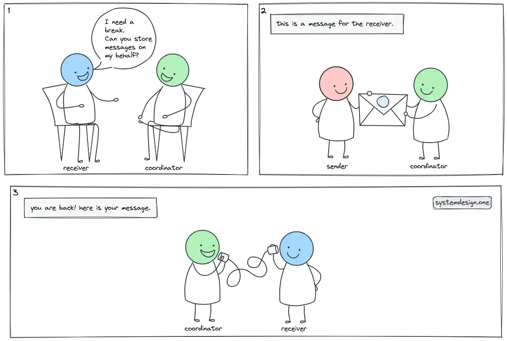
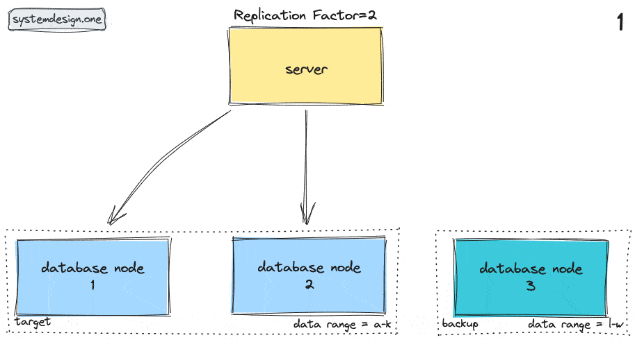
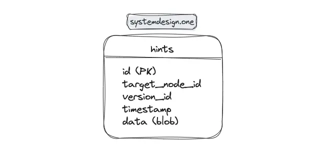

Hinted Handoff
High Availability Architecture
The target audience for this article falls into the following roles:
- Tech workers
- Students
- Engineering managers
The prerequisite to reading this article is fundamental knowledge of system design components. This article does not cover an in-depth guide on individual system design components.
Disclaimer: The system design questions are subjective. This article is written based on the research I have done on the topic and might differ from real-world implementations. Feel free to share your feedback and ask questions in the comments.
Download my system design playbook for free on newsletter signup:
I would never voluntarily build the hinted handoff model of consistency repair again.
- Ryan Betts, InfluxData
Terminology
The following terminology might be helpful for you:
- Node: a server that provides functionality to other services
- Coordinator Node: a node that determines the target node to handle the request in the cluster
- Amazon Dynamo: a highly available distributed key-value data store
- Apache Cassandra: a distributed, wide-column data store
- Apache Kafka: a distributed event store and stream-processing platform
Requirements
Design a distributed system pattern with the following characteristics:
Functional Requirements
- tolerate temporary node failures
- simple to implement
Non-Functional Requirements
- high write availability
- eventually consistent
- scalable
What Is High Availability Architecture?
Distributed systems are gaining popularity due to inherent increased fault tolerance and the ability to eliminate single points of failure. A distributed system replicates the data to provide high availability at the expense of reduced consistency 1.
The highly available distributed data stores such as Amazon Dynamo, and Apache Cassandra implement the eventual consistency model 2, 3.
The systems with high-availability architecture must be able to maintain optimal performance even during peak loads. High availability is typically measured as the percentage of time a service remains available to the clients 4.
Real-World Analogy of Hinted Handoff

The real-world analogy of hinted handoff can be described as follows 5:
- you (receiver) inform your coworker (coordinator) that you are heading out on a coffee break
- coworker collects the message on your behalf from the sender
- you return to your desk after the coffee break
- coworker relays the message to your desk
- you read the message
Without the hinted handoff approach, either the sender must wait until you return to your desk or you will miss the message.
Hinted Handoff Explained
The availability of a node is determined by a multitude of factors such as hardware faults, memory exhaustion, network partitions, and garbage collection (GC) pauses 6, 1.
The node responsible to store a particular dataset is known as the target node. The node that temporarily stores the particular dataset on behalf of the target node is known as the backup node. The backup node is also known as the coordinator node.
The backup node stores hints when the target node becomes unavailable. The hints are essentially data mutations along with metadata of the target node 7.
Eventual consistency is attained through the relay of the hints by the backup node when the target node is healthy again 8. The technique of transmitting the data mutation post-failure resolution is known as hinted handoff 5. In other words, hinted handoff is a distributed system pattern to perform repairs in the write path 6.
The hinted handoff pattern offers eventual consistency and improved availability on temporary node failures. The high availability of nodes is also a requirement to maintain the replication factor (RF) across the system. The hinted handoff pattern allows the system to manage the same amount of write operations despite operating at a reduced capacity 6.

The high-level workflow of hinted handoff pattern can be outlined as follows 8, 6, 1, 7, 9, 10:
- networking protocols such as gossip protocol are used to detect node failures in the system
- the failed nodes are marked unavailable
- requests to the unavailable target node are redirected to the backup node
- backup node persists the data mutations and metadata of the target node in hints
- gossip protocol is used to determine the health of the target node that was unavailable
- the target node is back healthy again
- the backup node delivers the hints to the target node
- the target node replays the data mutations
- the backup node removes the hints
The storage location of hints depends on the system implementation. For instance, Apache Cassandra stores the hints in the backup node for a certain time frame 3. The backup node flushes the hints to disk-based storage every few seconds. Alternatively, hints can be stored in the local directory of each node to improve the replay performance 6.
The backup node will reject hints if the target node remains unavailable for more than an extended period. The backup node should remove the hints when the target node gets decommissioned. The hints for dropped tables must also be removed 7.
The backup node must track the number of hints that are written concurrently. The amount of hints stored in the backup nodes increases when a significant amount of target nodes becomes unavailable. There is a risk that an increased amount of hints degrade the performance of the backup node resulting in write rejections or an error response being thrown 6.
The following factors impact the lifecycle of the hints 9:
- hint window: time frame allowed to collect hints
- garbage collection grace time: expiration time of hints
- time-to-live (TTL): validity of data mutations
The requirements and system-specific implementations should take into consideration whether a failure should be shown to the client when the target node is temporarily unavailable and hinted handoff is executed. On top of that, the health patterns of hinted handoff are also debatable - it is difficult to determine an optimal frequency of hinted handoff execution to declare a system healthy 1.
It is also common to draw parallels between hinted handoff and write-ahead logging (WAL) replication. The WAL is relatively simpler but in essence shares similar drawbacks to the hinted handoff pattern 11.
An alternative approach to implementing high availability architecture is to use a shared-nothing approach by deploying a log-based journaling service such as Apache Kafka. With this method, the data is ingested into the durable journal before being written into the database 11, 10.
Further system design learning resources
Download my system design playbook for free on newsletter signup:
Sloppy Quorum and Hinted Handoff
The traditional quorum-based approach results in reduced system availability when network partitions occur or if multiple target nodes become unavailable. Put another way, the traditional quorum-based approach is not fault-tolerant 5.
The sloppy quorum is a variant of the quorum-based approach that leverages hinted handoff pattern to reach quorum when multiple target nodes become unavailable 5.
Amazon Dynamo employs the sloppy quorum and hinted handoff pattern as a workaround to redirect write operations to the first N healthy nodes in the consistent hash ring. Merkle tree is an anti-entropy protocol that is widely used by databases such as Amazon Dynamo to detect data inconsistencies and synchronize data changes on permanent node failures 12, 2.
The primary drawback of sloppy quorum is that read operations return stale data if the nodes haven’t communicated with each other 5. In addition, the durability of the system is compromised if the backup node crashes before dispatching the hints to the target node 12.
Hinted Handoff Data Model

The backup node stores the hints in the hints table on durable disk-based storage 1, 7. The hints table contains the following fields 6:
- ID: identifier of the data mutation
- target_node_id: identifier of the unavailable target node
- version_id: version of the database system
- timestamp: determines the hint TTL
- data: data mutation stored as a blob
Hinted Handoff Use Cases
The popular use cases of the hinted handoff are as follows 11, 8, 2, 3:
- Distributed databases - Apache Cassandra and Amazon Dynamo
- Content delivery networks (CDN) redirect the traffic to the healthy nodes
Amazon Dynamo and Apache Cassandra are distributed databases that implement hinted handoff to achieve consistency and high availability within a symmetric cluster of nodes.
Hinted Handoff in Cassandra
The hinted handoff consistency pattern is built into Apache Cassandra 9, 3. Although Cassandra enables hinted handoff pattern by default, it is optional to execute hinted handoff in the workflow of a write operation.
The hinted handoff writes are not taken into consideration for quorum-based consistency. Apache Cassandra throws an exception if a sufficient number of nodes are not available to attain a quorum. On the other hand, Amazon Dynamo defaults to sloppy quorum if a sufficient number of nodes are not available 7, 2.
Earlier releases of Cassandra used to store hints in the hints table. However, the latest release of Cassandra utilizes flat files on disk to store hints 9. Cassandra persists the hints for a particular database replica under a single partition key. Therefore, Cassandra can replay hints via a sequential read operation with very little impact on performance 7, 3.
Even though hinted handoff allows Cassandra to execute the same amount of write operations when the cluster is operating at a reduced capacity, failures should be permitted to enforce reliability and performance 7, 3.
Hinted Handoff Advantages
The benefits of hinted handoff pattern can be summed up as follows 7, 8:
- reduced read repairs and improved read performance
- extremely high write availability
- improved consistency after temporary outages such as network faults
- improved fault tolerance
- increased durability on temporary failures of target nodes via redirection of writes to backup nodes
- reduced latency by routing writes to healthy backup nodes
- improved scalability through redirection of traffic to healthy backup nodes
Hinted Handoff Disadvantages
The drawbacks of hinted handoff pattern can be summarized as the following 7, 8, 11, 12, 10:
- reduced durability when hardware faults occur to backup nodes
- increased system complexity
- increased storage requirements due to the need for additional metadata
- stale reads until hints are replayed
- increased bandwidth usage due to data redirection
- increased input-output (I/O) load on the backup nodes if numerous target nodes become unavailable
- noisy signal without being an actionable metric due to temporary failures
- increased operational complexity on non-uniform workloads
- potential thundering herd problem when the backup node tries to quickly replay hints on a newly returned target node
The hinted handoff is a suboptimal architecture for load-shedding because the backup nodes must tolerate additional load and journal the writes on behalf of the unavailable target nodes. This approach will eventually result in degraded system performance. A workaround to reduce the load on backup nodes is to deploy dedicated storage partitions for storing hints 11, 10.
There are also cases when hinted handoff can be a precursor to a serious cluster failure that might affect data durability. However, it is difficult to identify whether an action should be taken at an early stage by the human operator 11, 10.
Summary
The hinted handoff is a sophisticated approach to attain improved reliability and resiliency in the eventual consistency model. The hinted handoff pattern is implemented by distributed databases such as Amazon Dynamo and Apache Cassandra 2, 3. As always, every software architecture pattern comes with a trade-off.
What to learn next?
Download my system design playbook for free on newsletter signup:
License
CC BY-NC-ND 4.0: This license allows reusers to copy and distribute the content in this article in any medium or format in unadapted form only, for noncommercial purposes, and only so long as attribution is given to the creator. The original article must be backlinked.
References
-
Katy Farmer, Eventual Consistency: The Hinted Handoff Queue (2018), influxdata.com ↩︎
-
Giuseppe DeCandia, et al., Dynamo: Amazon’s Highly Available Key-value Store (2007), allthingsdistributed.com ↩︎
-
Avinash Lakshman, Prashant Malik, Cassandra - A Decentralized Structured Storage System (2009), cs.cornell.edu ↩︎
-
John Noonan, High Availability Architecture Demystified (2022), redis.com ↩︎
-
varunu28, Sloppy Quorum and Hinted handoff: Quorum in the times of failure (2022), distributed-computing-musings.com ↩︎
-
Hinted handoff: repair during write path, docs.datastax.com ↩︎
-
Jonathan Ellis, Modern hinted handoff (2012), datastax.com ↩︎
-
Tamerlan Gudabayev, The Design Patterns for Distributed Systems Handbook (2023), freecodecamp.org ↩︎
-
Radovan Zvoncek, Hinted Handoff and GC Grace Demystified (2018), thelastpickle.com ↩︎
-
Ryan Betts, Lessons and Observations Scaling a Time Series Database (2018), InfluxData ↩︎
-
Colin Breck, Shared-Nothing Architectures for Server Replication and Synchronization (2019), blog.colinbreck.com ↩︎
-
varunu28, Paper Notes: Dynamo - Amazon’s Highly Available Key-value Store (2022), distributed-computing-musings.com ↩︎